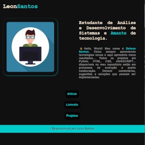
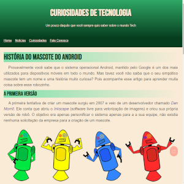

Hello! World,👋
Meu nome é Deleon Santos!
Sou alguém que prioriza o ambiente familiar com foco nas pessoas do meu convívio pessoal e profissional.
Eu Gosto de viagens e passeios com familiares e amigos, gosto de compartilhar conquistas e emoções que dão significado a vida.
Encaro os desafios com otimismo mantendo uma rotina equilibrada entre responsabilidade, trabalho e lazer.
Formação Acadêmica
Sou estudante de tecnologia, aluno de Análise e Desenvolvimento de Sistemas no Centro Educacional UNINTER e estou amando a experiencia com PROGRAMAÇÃO WEB. Também dedico uma parcela de tempo a estudar o idioma inglês como língua secundária.
Habilidades
Projetos
Vem comigo visitar alguns dos meus projetos pessoais e colaborativos, deixe sugestão ou contribuição para elevarmos o nível de desenvolvimento .
Portfolio
Este foi o meu primeiro portfólio. foi desenvolvido em html e css, nesta versão esta responsivo e adaptavel para telas mobile.
Clique aqui para ver o codigo.
História do mascote Android
Este foi o primeiro site em html e css, esta versão também e responsiva e adaptavel a telas menores.
Clique aqui para ver o codigo.
Contato
Conteúdo da seção "Contato".